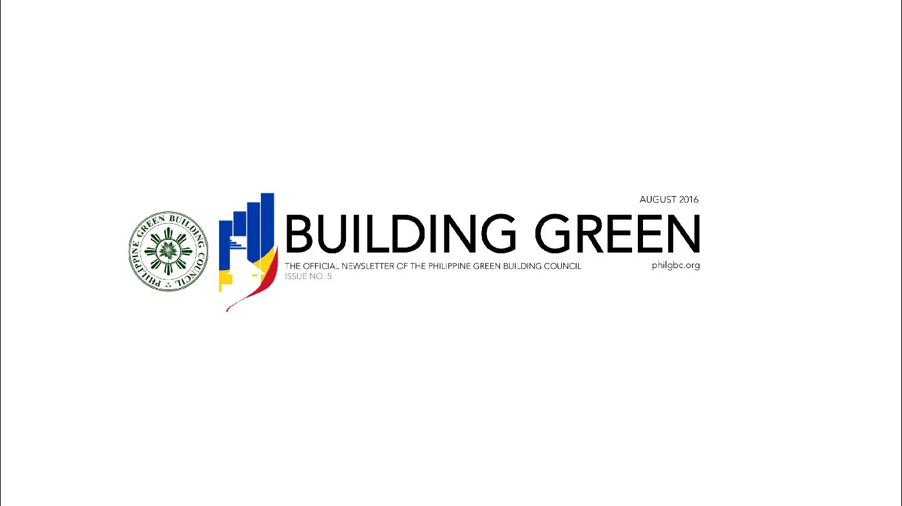

<!DOCTYPE html>
<html>
<head>
  <!-- Site made with Mobirise Website Builder v3.4.6, https://mobirise.com -->
  <meta charset="UTF-8">
  <meta http-equiv="X-UA-Compatible" content="IE=edge">
  <meta name="generator" content="Mobirise v3.4.6, mobirise.com">
  <meta name="viewport" content="width=device-width, initial-scale=1">
  <link rel="shortcut icon" href="assets/images/bg-fc2-128x119-41.png" type="image/x-icon">
  <meta name="description" content="">
  
  <link rel="stylesheet" href="https://fonts.googleapis.com/css?family=Roboto:700,400&amp;subset=cyrillic,latin,greek,vietnamese">
  <link rel="stylesheet" href="assets/font-awesome/css/font-awesome.min.css">
  <link rel="stylesheet" href="assets/bootstrap/css/bootstrap.min.css">
  <link rel="stylesheet" href="assets/mobirise/css/style.css">
  <link rel="stylesheet" href="assets/mobirise/css/mbr-additional.css" type="text/css">
  
  
  
</head>
<body>
<section class="mbr-navbar mbr-navbar--freeze mbr-navbar--absolute mbr-navbar--transparent mbr-navbar--sticky mbr-navbar--auto-collapse" id="menu-0">
    <div class="mbr-navbar__section mbr-section">
        <div class="mbr-section__container container">
            <div class="mbr-navbar__container">
                
                <div class="mbr-navbar__hamburger mbr-hamburger"><span class="mbr-hamburger__line"></span></div>
                <div class="mbr-navbar__column mbr-navbar__menu">
                    <nav class="mbr-navbar__menu-box mbr-navbar__menu-box--inline-right">
                        <div class="mbr-navbar__column">
                            <ul class="mbr-navbar__items mbr-navbar__items--right float-left mbr-buttons mbr-buttons--freeze mbr-buttons--right btn-decorator mbr-buttons--active mbr-buttons--only-links"><li class="mbr-navbar__item"><a class="mbr-buttons__link btn text-white" href="#top"><span style="font-weight: normal;">HOME</span></a></li> <li class="mbr-navbar__item"><a class="mbr-buttons__link btn text-white" href="index.html#gallery1-1"><span style="font-weight: normal;">TIMELINE</span></a></li> <li class="mbr-navbar__item"><a class="mbr-buttons__link btn text-white" href="index.html#features1-2"><span style="font-weight: normal;">ABOUT</span></a></li> <li class="mbr-navbar__item"><a class="mbr-buttons__link btn text-white" href="index.html#contacts1-0"><span style="font-weight: normal;">CONTACT US</span></a></li>       </ul>                            
                            
                        </div>
                    </nav>
                </div>
            </div>
        </div>
    </div>
</section>

<section class="engine"><a rel="external" href="https://mobirise.com">easy website creator</a></section><section class="mbr-figure mbr-figure--wysiwyg mbr-figure--full-width mbr-figure--caption-inside-bottom mbr-after-navbar" id="image1-0">

    <div></div>
    
</section>

<section class="mbr-section mbr-section--relative mbr-section--fixed-size" id="content5-0" style="background-color: rgb(255, 255, 255);">
    
    <div class="mbr-section__container container mbr-section__container--first" style="padding-top: 31px;">
        <div class="mbr-header mbr-header--wysiwyg row">
            <div class="col-sm-8 col-sm-offset-2">
                <h3 class="mbr-header__text">Philippine Green Building Council hold 1st PHILGBC Awards on Leadership in Green Building</h3>
                
            </div>
        </div>
    </div>
    <div class="mbr-section__container container mbr-section__container--last" style="padding-bottom: 93px;">
        <div class="row">
            <div class="mbr-article mbr-article--wysiwyg col-sm-8 col-sm-offset-2"><p>TAGUIG – JULY 14, 2016 – The Philippine Green Building Council (PHILGBC) awarded its first set of winners for Leadership in Green Building during the ULI-PHILGBC Awards for Excellence in Health and Sustainability held at the 37th Floor, Net Park in Bonifacio Global City, Taguig City.</p><p>The PHILGBC Awards on Leadership in Green Building showcased the top companies who have incorporated green building leadership and sustainability not only in their numerous projects but within their company’s business practices as well.&nbsp;</p><p>Mr. Ramon Rufino, PHILGBC Chairman and President of The Net Group shared “for the first time, the PHILGBC will be holding the Philippine leg to the Asia Pacific Leadership in Green Building Awards competition. Tonight’s winners will represent the Philippines at the Asia Pacific regional competition and the PHILGBC will submit our country’s winners to the World Green Building Council tomorrow.”</p><p>The Awards on Leadership in Green Building is in line with the World Green Building Council’s (WGBC) Asia Pacific Network (APN) Awards for Leadership in Green Building, the only award giving body that recognizes green building achievements and recognitions among its members in the national Green Building Councils in the Asia Pacific Region. The winners of the PHILGBC Awards will be the official nominees from the Philippines at the WGBC APN Awards.&nbsp;</p><p>There are two award categories namely:  Business Leadership in Sustainability and Leadership in Sustainability Design and Performance.  The Business Leadership in Sustainability Award is given to the company that has incorporated sustainability within their business models and have set an example by demonstrating sustainable practices in their operations and leadership within the industry through contributions towards the sustainable built environment. The Leadership in Sustainable Design and Performance Award is given to pioneering green building projects that provide a range of benefits by a holistic approach to sustainability that leads to positive outcomes for both the environment and people. The three sub categories of the award are as follows: residential, commercial, and institutional.&nbsp;</p><p>”I think it’s still an understatement, going through the eye of the needle,” quipped Mr. de la Cruz, CEO of the PHILGBC on the meticulous process of screening the winners, which include looking into business practices and models, as well as strategies and actions implemented in green building projects that create sustainable built environments.&nbsp;</p><p><strong>ArthaLand Corporation</strong>, the winner for <strong>Business Leadership in Sustainability</strong>, is a Filipino boutique developer well-known for integrating sustainable, green building practices in their top quality buildings and residences, as well as in their business models serving as a prime example for sustainable built environments.</p><p><strong>The Zuellig Building</strong> by <strong>Bridgebury Realty Corporation</strong> received the <strong>Leadership in Sustainability Design &amp; Performance Award</strong> for the Commercial sub-category. Recognized as Platinum LEED certified, the project green building practices and strategies for a cost efficient, sustainable, eco-friendly building.</p><p><strong>The Primavera Residences</strong> by <strong>Italpinas Euroasian Design &amp; Development Corporation</strong> received the <strong>Leadership in Sustainability Design &amp; Performance Award for Residential</strong> sub-category. It is the company’s first sustainable, mixed-used development located in Cagayan de Oro that utilizes renewable sources of energy and green strategies that promote an eco-friendly environment.&nbsp;</p><p>Winners of the WorldGBC Asia Pacific Network Awards will be announced in October 2016 during the India Green Building Council Conference in Mumbai.</p><p>For information on the PHILGBC Awards, visit <a href="http://philgbc.org" target="_blank">http://philgbc.org/</a> or email the PHILGBC National Secretariat at <a href="mailto:secretariat@philgbc.org" target="_blank">secretariat@phillgbc.org</a></p><p><strong><br></strong></p><p><br></p></div>
        </div>
    </div>
    
</section>

<section class="mbr-section mbr-section--relative mbr-section--fixed-size" id="contacts1-0" style="background-color: rgb(60, 60, 60);">
    
    <div class="mbr-section__container container">
        <div class="mbr-contacts mbr-contacts--wysiwyg row" style="padding-top: 60px; padding-bottom: 60px;">
            <div class="col-sm-4">
                <div><a href="mailto:secretariat@philgbc.org?subject=buildinggreenphilippines.org" class="fa fa-envelope-o mbr-iconfont mbr-iconfont-contacts1"></a></div>
            </div>
            <div class="col-sm-8">
                <div class="row">
                    <div class="col-sm-4">
                        <p class="mbr-contacts__text"><strong>PHILIPPINE GREEN BUILDING COUNCIL</strong><br><strong>National Secretariat</strong><br>Unit G-4B, The NET One Center<br>26th Street corner 3rd Avenue<br>Bonifacio Global City,<br>Taguig City 1634 Philippines</p>
                    </div>
                    <div class="col-sm-4">
                        <p class="mbr-contacts__text"></p><p></p><p><strong>CONTACTS</strong><br>T &nbsp;&nbsp;&nbsp;&nbsp;(+63 2) 815 9301<br>F &nbsp;&nbsp;&nbsp;&nbsp;(+63 2) 858 8082</p>E&nbsp; &nbsp; <a href="mailto:secretariat@philgbc.org?subject=buildinggreenphilippines.org" target="_blank">secretariat@philgbc.org</a><p></p><p></p>
                    </div>
                    <div class="col-sm-4"><p class="mbr-contacts__text"><strong>LINKS</strong></p><ul class="mbr-contacts__list"><li><a href="http://philgbc.org" target="_blank">Philippine Green Building Council</a><a class="mbr-contacts__link text-gray" href="https://mobirise.com/"></a></li><li><a href="http://berdeonline.org" target="_blank">BERDE</a><a class="mbr-contacts__link text-gray" href="https://mobirise.com/mobirise-free-win.zip"></a></li><li><a href="http://buildinggreenphilippines.org" target="_blank">Building Green Philippines</a><a class="mbr-contacts__link text-gray" href="https://mobirise.com/mobirise-free-mac.zip"></a></li></ul></div>
                </div>
            </div>
        </div>
    </div>
</section>

<footer class="mbr-section mbr-section--relative mbr-section--fixed-size" id="footer1-0" style="background-color: rgb(68, 68, 68);">
    
    <div class="mbr-section__container container">
        <div class="mbr-footer mbr-footer--wysiwyg row" style="padding-top: 36.900000000000006px; padding-bottom: 36.900000000000006px;">
            <div class="col-sm-12">
                <p class="mbr-footer__copyright">Copyright (c) 2007 - 2016 Building Green Philippines and the Philippine Green Building Council. All Rights Reserved</p>
            </div>
        </div>
    </div>
</footer>


  <script src="assets/web/assets/jquery/jquery.min.js"></script>
  <script src="assets/bootstrap/js/bootstrap.min.js"></script>
  <script src="assets/smooth-scroll/SmoothScroll.js"></script>
  <script src="assets/mobirise/js/script.js"></script>
  
  
</body>
</html>